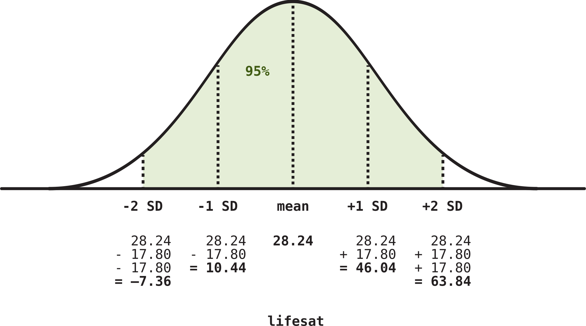
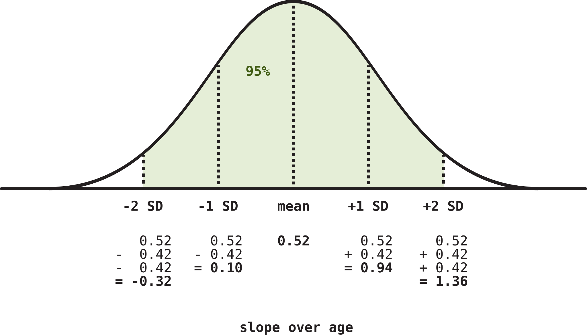

| variable | description |
|---|---|
| age | Age (years) |
| lifesat | Life Satisfaction score |
| dwelling | Dwelling (town/city in Scotland) |
| size | Size of Dwelling (> or <100k people) |
Interpret LMM summary
When we fit an LMM and look at its estimates using summary(), what do the numbers mean?
The first example shows the basic idea with just a single predictor.
The second example shows extra quirks that are involved in interpreting the SDs of the random effects once multiple predictors are involved.
NoteGeneral guide to interpreting any model’s fixed effects (DAPR2 recap)
For single regression models (e.g., Y ~ A) or multiple regression models (e.g., Y ~ A + B):
(Intercept):- The estimated mean outcome when all predictors are equal to zero.
A:- The estimated mean change in
YwhenAchanges from 0 to 1, holding any/all other predictors constant.
- The estimated mean change in
B:- The estimated mean change in
YwhenBchanges from 0 to 1, holding any/all other predictors constant.
- The estimated mean change in
For interaction models (e.g., Y ~ A * B):
(Intercept):- The estimated mean outcome when all predictors are equal to zero.
A:- The estimated mean change in
YwhenAchanges from 0 to 1, specifically whenB= 0.
- The estimated mean change in
B:- The estimated mean change in
YwhenBchanges from 0 to 1, specifically whenA= 0.
- The estimated mean change in
A:B:- The estimated adjustment to the association between
YandAwhenBchanges from 0 to 1. - Or equivalently, the estimated adjustment to the association between
YandBwhenAchanges from 0 to 1.
- The estimated adjustment to the association between
Example (one predictor): Life satisfaction in Scotland
These data come from 112 people across 12 different Scottish dwellings (cities and towns). Information is captured on their ages and a measure of life satisfaction. The researchers are interested in if there is an association between age and life-satisfaction.
Data are available at https://uoepsy.github.io/data/lmm_lifesatscot.csv.
lifesatscot <- read_csv("https://uoepsy.github.io/data/lmm_lifesatscot.csv")Fit the model
Our model is the following (to see how we figured out this random effect structure, see Identify possible random effects).
lifesat_mod <- lmer(
lifesat ~ age + (1 + age | dwelling),
data = lifesatscot
)Here’s the model summary:
summary(lifesat_mod)Linear mixed model fit by REML ['lmerMod']
Formula: lifesat ~ age + (1 + age | dwelling)
Data: lifesatscot
REML criterion at convergence: 822
Scaled residuals:
Min 1Q Median 3Q Max
-1.9186 -0.6957 -0.0002 0.5801 1.9555
Random effects:
Groups Name Variance Std.Dev. Corr
dwelling (Intercept) 316.660 17.795
age 0.176 0.419 -0.87
Residual 63.527 7.970
Number of obs: 112, groups: dwelling, 12
Fixed effects:
Estimate Std. Error t value
(Intercept) 28.241 6.310 4.48
age 0.523 0.148 3.53
Correlation of Fixed Effects:
(Intr)
age -0.903
optimizer (nloptwrap) convergence code: 0 (OK)
Model failed to converge with max|grad| = 0.0417437 (tol = 0.002, component 1)
See ?lme4::convergence and ?lme4::troubleshooting.
Caution“Model failed to converge”?
At the very bottom of this model summary, there’s a bit that says
Model failed to converge with max|grad| = 0.0417437 (tol = 0.002, component 1)
See ?lme4::convergence and ?lme4::troubleshooting.For now, so that this flash card focuses on interpretation, we’ll be a bit cheeky and just pretend that that isn’t there.
But this is a real problem for our model. If you saw this in a real life data analysis scenario, you’d have to deal with it. We’ll see how to do that later (see Troubleshoot).
CautionWhere are the p-values?
For reasons that are technical and not important for this course, LMMs do not automatically estimate p-values for each coefficient the way that basic LMs do.
We’ll see how to add on p-values to the model summary in Get p-values for LMMs.
The fixed effects
All the tools for interpreting intercepts and slopes that you learned in DAPR2 are exactly the same for LMMs. The only new thing is that now, predictors’ coefficients are also called “fixed effects”.
Fixed effects represent the average relationship between predictor(s) and outcome, averaging over all groups (here, over all dwellings).
To show only the model’s fixed effect estimates, we can use fixef():
fixef(lifesat_mod)(Intercept) age
28.241 0.523 (Intercept): The estimated mean life satisfaction for people aged zero is 28.24 points.age: When age increases by one year, then on average, life satisfaction is estimated to increase by 0.52 points.
The random effects
Access the random effect part of the model summary using VarCorr(). Sometimes you’ll hear this part of the model summary called the “variance components”.
Try to read this output as a table with the headings “Group”, “Name”, “Std.Dev.”, and “Corr”.
VarCorr(lifesat_mod) Groups Name Std.Dev. Corr
dwelling (Intercept) 17.795
age 0.419 -0.87
Residual 7.970 First we’ll go through how to read each row of this table, then we’ll talk about how you would describe what these numbers actually mean.
Reading the table
- First row:
- The model has estimated adjustments for each
dwellingto the fixed(Intercept). Internally, the model stores all those adjustments in a single variable. Imagine that variable is calleddwelling_int_adjustments. Summarising all those adjustments withsd(dwelling_int_adjustments)tells us that their standard deviation is 17.80.- In short: the standard deviation of the by-dwelling intercept adjustments is 17.80 points.
- The model has estimated adjustments for each
- Second row:
- The model has estimated adjustments for each
dwellingto the fixed slope overage. Internally, the model stores all those adjustments in a single variable. Imagine that variable is calleddwelling_age_adjustments. Summarising all those adjustments withsd(dwelling_age_adjustments)tells us that their standard deviation is 0.42.- In short: the standard deviation of the by-dwelling adjustments to the slope over
ageis 0.42 points.
- In short: the standard deviation of the by-dwelling adjustments to the slope over
- The model also computes the correlation between
dwelling_int_adjustmentsanddwelling_age_adjustments.- The by-dwelling adjustments to the intercept and to the slope over
agehave a correlation of –0.87.
- The by-dwelling adjustments to the intercept and to the slope over
- The model has estimated adjustments for each
- Third row:
- The observed data points don’t all lie precisely on the lines that the model estimates for each group. The distance between a data point and its group line is called its “residual”.
- The model stores how far away each data point is from its group line in a single variable—let’s call it
residual. Summarising all those distances withsd(residual)tells us that the standard deviation of the residuals is 7.97.
CautionExtracting values from
VarCorr()
If you want to extract and save the random intercept/slope SDs and correlation, here’s the code that’ll do that for you.
In general, for SDs (replace MODEL, GROUPINGVAR, and COEFNAME):
attr(VarCorr(MODEL)$GROUPINGVAR, "stddev")[['COEFNAME']]For example, random intercept SD:
attr(VarCorr(lifesat_mod)$dwelling, "stddev")[['(Intercept)']][1] 17.8Random slope SD:
attr(VarCorr(lifesat_mod)$dwelling, "stddev")[['age']][1] 0.419In general, for correlations (replace MODEL, GROUPINGVAR, and SLOPECOEFNAME):
attr(VarCorr(MODEL)$GROUPINGVAR, "correlation")['(Intercept)', 'SLOPECOEFNAME']For example, the correlation between these random intercepts and slopes:
attr(VarCorr(lifesat_mod)$dwelling, "correlation")['(Intercept)', 'age'][1] -0.869Interpreting the numbers: SDs
These standard deviations don’t tell us very much on their own. To interpret them, we should relate them to the estimates for the fixed effects.
Intercept
The estimated mean life satisfaction for people aged zero, aggregating over all the different dwellings, is 28.24 points. But each dwelling also has its own line associating age with lifesat. And the intercepts of those lines vary a certain amount around this fixed intercept.
Specifically, we know that the variation is assumed to follow a normal distribution (see LMM assumptions), and the standard deviation of that normal distribution is 17.80. The following schematic shows the model’s estimated distribution of intercept adjustments by dwelling, with a mean of 28.24 (the fixed estimate) and a standard deviation of 17.80.

To interpret these numbers, notice first that the standard deviation of the random intercepts is pretty big, relative to the fixed effect estimate. In fact, drawing on what we know about how approximately 95% of the probability density of a normal distribution is between –2 SD below the mean and +2 SD above the mean, we can say that about 95% of the dwelling-level intercepts (that is, the estimated life satisfaction at age zero) are estimated to fall between –7.36 points and 63.84 points. This is a massive spread, and it indicates a lot of estimated variability between dwellings.
CautionBut
lifesat can’t be negative…
True!
We are modelling lifesat using a regular (non-generalised) linear model. These models assume that the outcome variable is continuous numeric, or in other words, that it can take on any possible value between negative infinity and positive infinity.
We as sensible humans know that lifesat can only be positive, but the model doesn’t know that. So it generates predictions in which lifesat receives impossible negative values.
When we use regular linear models for bounded numeric outcome variables (which we do in DAPR for the sake of simplicity), then odd predictions like these are something we just have to live with.
Beyond the scope of DAPR, you’ll find families of generalised linear model that are specifically designed to model positive-only values (for example, gamma regression), or bounded values between 0 and 1 or between 0 and 100 (for example, beta regression).
Slope over age
The estimated mean change in life satisfaction when age increases from zero to one is 0.52 points. Again, this is the fixed effect which aggregates over all dwellings. Each dwelling has its own line associating age with lifesat, and each line has a slope that’s been adjusted a bit from the value of 0.52. The standard deviation of those adjustments is 0.42: a big value compared to the fixed slope!
This means that 95% of the slopes for the lines per dwelling are estimated to be between \(0.52 - (2 \times 0.42)\) and \(0.52 + (2 \times 0.42)\), specifically between –0.32 and 1.36.

So even though the fixed effect of age is positive, the model predicts that some dwellings will actually have negative associations between age and lifesat!
Interpreting the numbers: Correlation
The correlation between each dwelling’s intercept adjustment and slope adjustment is estimated to be –0.87. In the context of this study, this large negative correlation means that:
- When a dwelling has a large intercept (that is, a large estimated average
lifesatvalue for people aged zero), its slope tends to be small (that is, a more gradual line, a weaker effect). - Or equivalently, when a dwelling has a small intercept (that is, a small estimated average
lifesatvalue for people aged zero), its slope tends to be large (that is, a steeper line, a stronger effect).
Example (interaction): CBD drinks and stress
Suppose that we conducted an experiment on a sample of 20 staff members from the Psychology department to investigate effects of CBD consumption on stress over the course of the working week. Participants were randomly allocated to one of two conditions: the control group continued as normal, and the CBD group were given one CBD drink every day. Over the course of the working week (5 days) participants stress levels were measured using a self-report questionnaire.
Data are available at https://uoepsy.github.io/data/stressweek1.csv.
| variable | description |
|---|---|
| dept | Department |
| pid | Participant Name |
| CBD | Whether or not they were allocated to the control group (N) or the CBD group (Y) |
| measure | Measure used to assess stress levels |
| day | Day of the working week (1 to 5) |
| stress | Stress Level (standardised) |
cbd_stress <- read_csv('https://uoepsy.github.io/data/stressweek1.csv')Because day doesn’t contain the value 0 (only 1 = Monday to 5 = Friday), the interpretations would be a bit funny if we ran the model as-is. So we’ll subtract 1 from each value of day. This will mean that Mondays are represented by 0, Tuesdays by 1, and so on.
cbd_stress <- cbd_stress |>
mutate(
day = day - 1
)This move is useful because now, when we need to interpret coefficients when day = 0, we can say “on Mondays”.
Fit the model
Our model is the following (see Identify possible random effects).
cbd_mod <- lmer(
stress ~ day * CBD + (1 + day | pid),
data = cbd_stress
)Here’s the model summary:
summary(cbd_mod)Linear mixed model fit by REML ['lmerMod']
Formula: stress ~ day * CBD + (1 + day | pid)
Data: cbd_stress
REML criterion at convergence: 128
Scaled residuals:
Min 1Q Median 3Q Max
-2.1753 -0.6520 -0.0267 0.6462 1.8157
Random effects:
Groups Name Variance Std.Dev. Corr
pid (Intercept) 0.19944 0.4466
day 0.00433 0.0658 0.02
Residual 0.11246 0.3354
Number of obs: 100, groups: pid, 20
Fixed effects:
Estimate Std. Error t value
(Intercept) 0.1318 0.1433 0.92
day 0.0757 0.0346 2.19
CBDY -0.0852 0.2422 -0.35
day:CBDY -0.1913 0.0585 -3.27
Correlation of Fixed Effects:
(Intr) day CBDY
day -0.339
CBDY -0.592 0.201
day:CBDY 0.201 -0.592 -0.339The fixed effects
fixef(cbd_mod)(Intercept) day CBDY day:CBDY
0.1318 0.0757 -0.0852 -0.1913 (Intercept): The estimated stress for people in the control group (whereCBD= N = 0, the reference level) on Mondays (whereday= 0) is 0.13 points.day: For people in the control group, going forward one weekday is estimated to increase stress by 0.08 points.CBDY: On Mondays, changing from the control group to the CBD group (whereCBD= Y = 1) is associated with a decrease in stress of 0.09 points.day:CBDYhas two equivalent interpretations:- For people in the CBD group, their slope over
dayis estimated to decrease by an additional 0.19 points. - On Mondays, the difference between the control group and the treatment group is estimated to decrease by an additional 0.19 points.
- For people in the CBD group, their slope over
The random effects
VarCorr(cbd_mod) Groups Name Std.Dev. Corr
pid (Intercept) 0.4466
day 0.0658 0.02
Residual 0.3354 Intercept (pay attention here!)
The SD of all the participant-level intercept adjustments is 0.45. As always, we can best interpret this number in the context of the fixed intercept, 0.13.
The important new thing: The fixed intercept tells us about the control group (the reference level of CBD). So, the range that we would compute by combining the fixed intercept and the random intercept SD is specifically for participants in the control group.
For participants in the control group, 95% of their intercepts are estimated to fall between
0.13 - (2 * 0.45)[1] -0.77and
0.13 + (2 * 0.45)[1] 1.03stress points.
CautionWhat about intercepts for participants in the CBD group?
We can compute the 95% range of intercepts for participants in the CBD group by adding the CBDY fixed slope to the calculation above.
Adding the CBDY fixed slope effectively “shifts” us from making calculations about the reference level (control group) to the non-reference level (CBD group).
So, for participants in the CBD group, 95% of their intercepts are estimated to fall between
0.13 - 0.09 - (2 * 0.45)[1] -0.86and
0.13 - 0.09 + (2 * 0.45)[1] 0.94stress points.
(Why do we specify “in the control group” but not “on Mondays”? Because the “Mondays” part falls out of the fact that we’re looking at the intercept of the line over day. The intercept is when day = 0, which is Mondays.)
Slope over day (pay attention here!)
The SD of all the participant-level slopes over day is 0.07. Once again, we’ll interpret this in the context of the fixed slope over day, estimated to be 0.08.
The important new thing: The slope over day is estimated for the reference level of CBD, that is, for the control group. So, the range that we compute by combining the fixed slope and the random slope SD is specifically for participants in the control group.
For participants in the control group, 95% of their slopes over day are estimated to fall between
0.08 - (2 * 0.07)[1] -0.06and
0.08 + (2 * 0.07)[1] 0.22. This range suggests that the model estimates that participants in the control group mostly get more stressed as the week goes on, but a few get less stressed too.
CautionWhat about slopes over
day for people in the CBD group?
We can compute the 95% range of slopes over age for people in the CBD group by adding the day:CBDY interaction term to the calculation above.
Adding the interaction term effectively “shifts” us from talking about the slope of the reference level to the slope of the non-reference level. It’s just like calculating the simple slope over day for the non-reference level!
So, for participants in the CBD group, 95% of their slopes over day are estimated to fall between
0.08 - 0.19 - (2 * 0.07)[1] -0.25and
0.08 - 0.19 + (2 * 0.07)[1] 0.03. This range suggests that the model estimates that participants in the CBD group mostly get less stressed as the week goes on, but a few do get more stressed too.
Correlation
The correlation between each participant’s intercept adjustment and slope adjustment is estimated to be 0.02. In the context of this study, this tiny positive correlation suggests that there aren’t really any tendencies, based on how stressed someone is on Mondays, whether they’ll get more or less stressed as the week goes on.